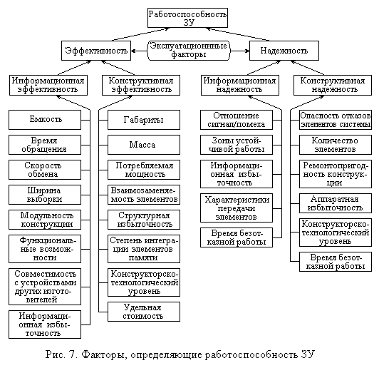
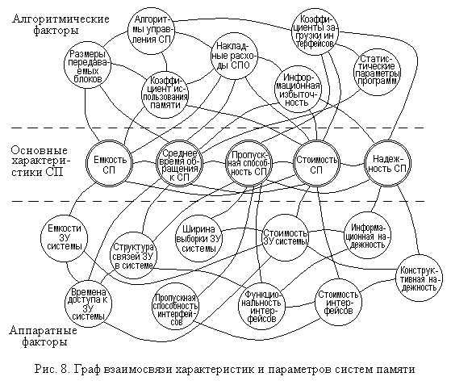

1.3. Системы памяти: классификация, критерии оценки
Как отмечалось в начале настоящей главы, для систем памяти (СП) характерна иерархическая организация, позволяющая достичь приемлемого компромисса между основными характеристиками запоминающих устройств. При этом различие требований к информационным потокам при решении разных классов задач обусловливает и различия в организации памяти ЭВМ, ориентированных на те или иные классы задач.
Особенности построения систем памяти могут затрагивать их структуру, принципы функционирования, логического взаимодействия и другие аспекты. К основным классификационным признакам систем памяти можно отнести следующие.
1. Количество уровней, т.е. отличных по своему назначению или конструктивным характеристикам запоминающих устройств. По этому признаку можно разделять СП на одноуровневые и многоуровневые. На практике одноуровневые системы памяти, представляющие собой одно или группу одинаковых ЗУ, встречаются лишь в специализированных системах.
Среди многоуровневых СП иногда выделяют системы с одним или несколькими исполнительными уровнями, т.е. уровнями, непосредственно доступными процессору. Широко известным примером такой системы является память ПЭВМ, в которой процессор имеет непосредственный доступ как к кэш памяти, так и к оперативной памяти.
2. Характер связей между уровнями. Связи
между уровнями системы памяти, допускающие обмен информацией между ними, определяют
допустимые потоки данных в системе и ее структуру. По характеру связей можно
выделить:
- централизованные СП, в которых обмен информацией между ЗУ различных
уровней осуществляется через какое-либо одно ЗУ, обычно через оперативную память;
- линейные СП, в которых обмен информацией возможен только между смежными
уровнями системы (например, кэш – оперативная память – жесткие диски);
- смешанные СП, обладающие связями, характерными как для централизованных,
так и для линейных СП (например, кэш – оперативная память – жесткий диск и CD
ROM, имеющие одинаковые связи с оперативной памятью);
- СП со структурой полного графа, включающие в себя устройства, позволяющие
устанавливать связи для обмена информацией между двумя любыми уровнями. Эти
системы могут различаться по способу реализации таких связей на магистральные,
в которых одна или большее количество шин разделяются во времени между всеми
подключенными к ним устройствами, и матричные, имеющие коммутационную
матрицу.
3. Тип разбиения адресного пространства памяти.
Обычно память разделяется на логические блоки для упрощения управления ею, причем
поддержка такого разбиения обеспечивается не только со стороны операционной
системы, но и аппаратной частью. По этому признаку различают системы памяти
:
- без разделения поля памяти на блоки;
- со страничной памятью, адресное пространство которых разделено на
участки одинакового размера, называемые страницами;
- с сегментированием памяти, в которых память разделяется на сегменты,
размер которых жестко не задается;
- с двухуровневым (странично-сегментным) разделением поля
памяти.
4. Количество обслуживаемых системой памяти процессоров – признак, по которому различают СП однопроцессорных и многопроцессорных ЭВМ и систем. Причем в тех случаях, когда мультипроцессирование не является просто средством повышения надежности за счет дублирования вычислений, СП, по сути, является центром связи системы в единое целое. В таких условиях СП должна обеспечивать многоканальный доступ к информации с поддержкой целостности и непротиворечивости (когерентности) данных на всех уровнях системы.
5. Порядок обслуживания обращений к ЗУ нижних уровней также может использоваться для подразделения СП. По этому признаку можно различать системы с обслуживанием обращений в порядке поступления и с диспетчеризацией обращений, т.е. обслуживанием их в том порядке, который позволит уменьшить среднее время ожидания обслуживания обращения (см. п. 4.2.2 главы 4).
Кроме того, к этой категории можно отнести и назначение адресов в дисковом массиве, которое может быть последовательным или с расслоением адресов по дисководам, о чем говорилось в предыдущем параграфе в отношении многоблочных ЗУ.
При выборе структуры, состава и характеристик систем памяти следует учитывать, что противоречивость предъявляемых к ним требований и большое количество факторов, влияющих на их характеристики, обусловливают сложность получения достаточно объективных и точных комплексных оценок СП. Например, рис. 7 дает представление о факторах, влияющих на работоспособность ЗУ, разделенных в соответствии с [1] на группы, которые определяют информационную и конструктивную надежность и эффективность. При объединении отдельных ЗУ в систему к этим факторам добавляется еще целый ряд, связанный со взаимодействием ЗУ между собой в составе системы памяти.

Поэтому с целью более полного учета характера функционирования и окружения СП при выборе критерия ее оценки следует рассматривать эту систему как компоненту вычислительной машины (системы), ориентируясь на назначение последней.
Любой критерий оценки должен включать основные характеристики оцениваемой системы, к которым в рассматриваемом случае относятся емкость системы памяти, среднее время обращения к ней, пропускная способность, стоимость и надежность. Ряд характеристик, например радиационная устойчивость, габариты, масса, энергопотребление, в типовых применениях могут не учитываться. Хотя, если речь идет, например о мобильных системах, последние три из названных характеристик имеют важное значение.
Емкость EСП системы памяти можно рассматривать в двух аспектах: либо как сумму объемов всех ЗУ, входящих в состав СП, либо как количество информации (программ и данных), которое можно разместить в системе. В первом случае можно говорить о технической емкости СП, во втором – об эффективной емкости. Понятно, что эффективная емкость всегда меньше технической, так как она определяется не только собственно составом СП, но и методами организации хранения данных, методами управления памятью и др. Например, можно вспомнить о файловых системах, которые накладывают ограничения снизу на место на диске, занимаемое даже самым небольшим файлом.
Среднее время обращения Tобр к СП можно определить через частоты обращений к отдельным устройствам системы и времена обращений tобрi к этим устройствам как
Tобр = Σi fi tобрi / Σi fi,
где fi есть среднее количество обращений к i-му ЗУ в единицу времени. Очевидно, что в этом случае Tобр в значительной степени зависит от относительных частот обращения к различным ЗУ, а не только от времени обращения к ним.Средней пропускной способностью B системы памяти называют количество информации, которое можно передать в СП или извлечь из нее в единицу времени. В общем виде B можно определить, усреднив (взвешенно) пропускные способности отдельных ЗУ, входящих в состав СП.
Стоимость CСП системы памяти определяется как сумма стоимостей всех входящих в ее состав ЗУ, контроллеров и дополнительных аппаратных средств, используемых для управления памятью. Строго говоря, некоторые средства управления памятью, как и сами ЗУ, могут быть интегрированы в процессор или в системные микросхемы (микросхемы чипсета или др.). В этом случае собственно стоимость ЗУ и средств управления ими приходится определять путем сравнения с аналогичными микросхемами, обладающими другими параметрами, или приближенно.
Надежность СП определяется надежностью составляющих ее блоков. Вопросы надежности подробно рассмотрены в соответствующей литературе, например в [1].
Все характеристики систем памяти взаимосвязаны между собой и имеют противоречивый характер. Например, уменьшение времени обращения к СП связано с использованием более быстродействующих, а следовательно, и дорогостоящих ЗУ. Увеличения пропускной способности дисковых ЗУ можно достичь, используя аппаратные или алгоритмические методы диспетчеризации, что приводит либо к росту стоимости и снижению надежности СП, либо к увеличению расходов времени на работу операционной системы.
Граф взаимосвязи характеристик СП и определяющих их факторов приведен на рис. 8.

Критерии оценки эффективности СП могут быть разделены на временные, стоимостные и интегральные. Как правило, критерии, относящиеся к первым двум группам, используются для оценки систем специализированного назначения и учитывают специфические требования.
Часто используемая в литературе форма интегрального критерия оценки системы памяти типа отношения производительность/стоимость, позволяя сравнивать различные СП, тем не менее едва ли может рассматриваться в качестве критерия, определяющего пригодность СП для конкретной ЭВМ или вычислительной системы. Например, СП, обладающая лучшим значением этого показателя, может не отвечать заданным ограничениям.
Поскольку система памяти работает не сама по себе, а входит в
состав некоторой ЭВМ (или вычислительного комплекса), то выбор ее характеристик
должен быть увязан с характеристиками этой ЭВМ, а также с классом задач, на
решение которых она ориентируется.
Конечно, если круг решаемых задач четко определен, то оценку выбираемой памяти
можно провести точнее. Но и в общем случае целесообразно руководствоваться общим
соображением о необходимости сбалансировать показатели памяти и остальной системы.
Подобный критерий описан в [8]. Более
формально это соображение можно представить следующим образом.
Пусть для простоты будут рассматриваться только характеристики стоимости и производительности системы памяти (хотя вопросы надежности, функциональных возможностей, стоимости эксплуатации, конечно, также играют свои роли). Тогда в качестве критерия выбора СП можно использовать стоимость решения задач на ЭВМ, стремясь к ее минимизации, при условии соблюдения ограничений на максимально допустимое время решения и стоимость ЭВМ.
Пусть C – стоимость ЭВМ, складывающаяся из двух компонент: C1 – стоимости системы памяти и C2 – стоимости остальной части ЭВМ: процессора, системы ввода-вывода и др. При необходимости можно аналогичным образом вынести в отдельную группу любые другие компоненты.
Пусть далее t – среднее время выполнения команды для рассматриваемой ЭВМ, причем это время также считается состоящим из двух компонент и определяется следующим выражением
t = t1 n + t2,
где t1 – среднее время обращения к памяти, t2 – среднее время выполнения команды, не совмещаемое с обращением к памяти, а n – среднее количество обращений к памяти, производимых при выполнении одной команды.
Тогда время tt решения задачи, требующей выполнения N команд, составит tt = N (t1 n + t2), а стоимость Ct этого решения будет Ct = C tt k0/T, где k0 – коэффициент расходов на эксплуатацию ЭВМ, а T – срок ее службы.
Полагая далее для упрощения k0 и T одинаковыми для всех ЭВМ (что, конечно, справедливо только в рамках ЭВМ одного класса), можно установить, что стоимость решения одной и той же задачи линейно зависит от произведения C t = (C1 + C2) (t1 n + t2). Если допустить также, что произведения C1t1 и C2t2 остаются постоянными в некоторой узкой области, то при выборе системы памяти следует минимизировать сумму “перекрестных” произведений C1t2 и C2t1 n.
Эти соображения, включающие в себя ряд допущений, могут служить основой для грубой оценки параметров выбираемой системы памяти. Хотя даже и с учетом принятых упрощений, оценка значений t1, t2 и n не является простой задачей, особенно с учетом зависимости всех этих величин от класса решаемых задач.
Тем не менее общий смысл этих рассуждений в целом подтверждает
и тот факт, что ЭВМ близких классов имеют и схожие параметры основных компонент.